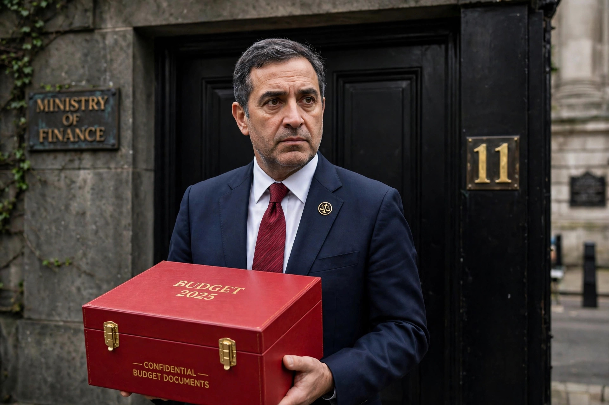

The Chancellor of the Exchequer is the senior minister of the Crown in the United Kingdom responsible for economic and financial matters. The office is, in practice, the country's chief finance minister and head of HM Treasury, and it is widely regarded as the second most powerful position in British government after the Prime Minister.

A finance minister holding a red budget box outside a black door numbered 11.
The Chancellor controls fiscal policy — taxation and public spending — and presents the annual Budget to the House of Commons, traditionally displaying the budget speech in a red dispatch box outside 11 Downing Street, the official residence. The Chancellor also oversees the Treasury's relationship with the Bank of England (operationally independent for monetary policy since 1997), the Office for Budget Responsibility's forecasts, and the government's stakes in public financial institutions.
The office evolved from the medieval Exchequer, the royal treasury named for the chequered cloth used for accounting. Early chancellors combined judicial and financial roles; over time the office became purely ministerial. Since 1714 the Chancellor has almost always sat in the House of Commons. Well-known holders include Robert Walpole (who combined the role with that of First Lord of the Treasury), William Pitt the Younger, William Ewart Gladstone, Winston Churchill, and Gordon Brown, the longest-serving modern Chancellor (1997–2007).
HM Treasury publications; standard histories of British government.